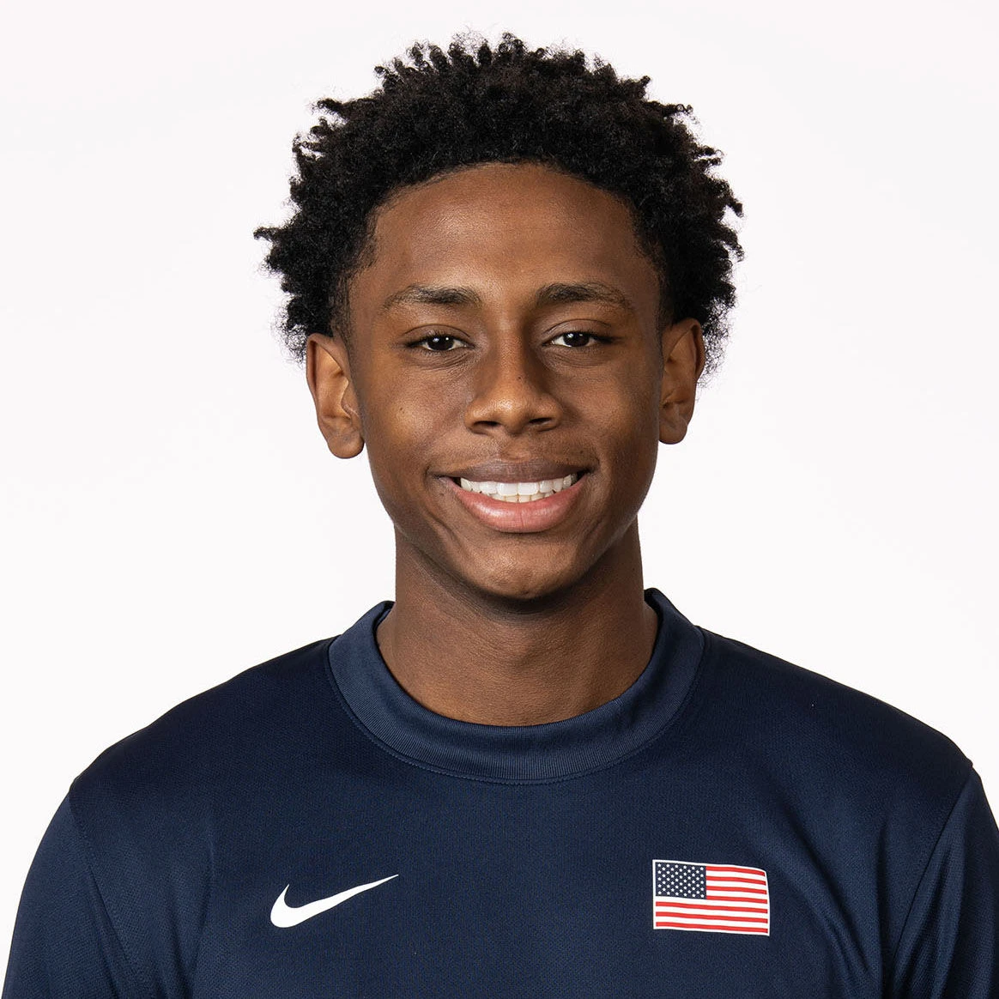

2027 NBA Draft · Preseason Report · Jul 5, 2026
Brandon McCoy
Preseason scouting notes ahead of Michigan's 2026-27 season.

Draft Projection
NBA Role Projection
Stats
No college minutes logged yet — this section fills in once the season tips off.
Info
School: Michigan | Class: FR | Position: SG | Height: 6'5" | Weight: 190 | Wingspan: 6'7"
Physical
He has an excellent physical profile for a guard at 6'5", 190 pounds with an estimated 6'8"–6'9" wingspan. He is an explosive leaper with outstanding vertical athleticism, though his straight-line speed and burst are less impressive.
Offense
During his Team USA appearances, most of his offense came as a transition finisher, cutter, or connective passer rather than as a primary creator. His jump shot looks mechanically sound, but the consistency and efficiency have yet to follow, especially on low volume. He has shown flashes as a passer, although his turnover numbers suggest there is still room for improvement as a decision-maker.
He plays at a slow, patient pace and relies on craft more than explosiveness to create advantages. It will be important to see how that style translates against higher-level competition.
Defense
He impacts the game defensively with his size, rebounding, and activity. He is an excellent rebounder for a guard and generates plenty of transition opportunities with his ability to jump passing lanes and create steals. His length and physical tools give him the potential to become a high-level perimeter defender.
Outlook
The biggest swing skill is his shooting. If he develops into a more consistent perimeter threat while maintaining the patient, under-control style that made him successful in high school, he has all the tools to become a highly valuable two-way guard. His combination of size, feel, and defensive versatility gives him an intriguing long-term ceiling.